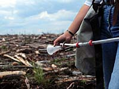
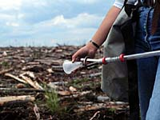

The Living Tree Forest Ecosystems Forest Stewardship Industry in the Forest Activities Quizzes Glossary
Can we live without trees in our world? Find out what trees are made of and how they affect us. Forest Stewardship  Forests are part of our environment and keeping them healthy helps to ensure our own survival on this planet. Find out what you can do to contribute to the green zone. Activities and Quizzes Learn how trees transport water and produce the air that keeps us alive. Grow your own tree. Have your class grow a demonstration forest. Learn more about the ecosystems around you. Test your knowledge in the quiz section. Click here...
Can we live without trees in our world? Find out what trees are made of and how they affect us.

Forests are part of our environment and keeping them healthy helps to ensure our own survival on this planet. Find out what you can do to contribute to the green zone.
Learn how trees transport water and produce the air that keeps us alive. Grow your own tree. Have your class grow a demonstration forest. Learn more about the ecosystems around you. Test your knowledge in the quiz section. Click here...
What do caribou, beavers and woodpeckers have in common? Find out how professional foresters use them to take the 'pulse' of the forest.
Can you identify the forest products you use every day? Come and explore the vast realm of forest industry. Learn to identify the various stages of lumber and paper production. Glossary and Terms From abiotic, referring to the absence of living organisms, to xylem, the principal water-conducting tissue and the chief supporting tissue of higher plants. If you need to look up an unfamiliar forestry term or phrase - visit the glossary.
Can you identify the forest products you use every day? Come and explore the vast realm of forest industry. Learn to identify the various stages of lumber and paper production.
From abiotic, referring to the absence of living organisms, to xylem, the principal water-conducting tissue and the chief supporting tissue of higher plants. If you need to look up an unfamiliar forestry term or phrase - visit the glossary.